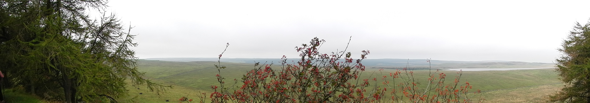

My name is Thomas Wong Hearing and I am a research scientist with over 11 years' experience investigating Earth's ancient climate conditions. I do this using a combination of geological data and climate models. Please have a look here for more about my research, and here for links to published papers.
Alongside my day-job I am a founding member of the peer-reviewed academic journal Open Palaeontology where I sit as a member of the steering committee and am one of the managing editors. Open Palaeontology is a new diamond open access journal for publishing scientific research in the field of palaeontology. Diamond open access means it is free to publish in and free to read. We are currently growing the team, so please get in touch if you're interested in joining.